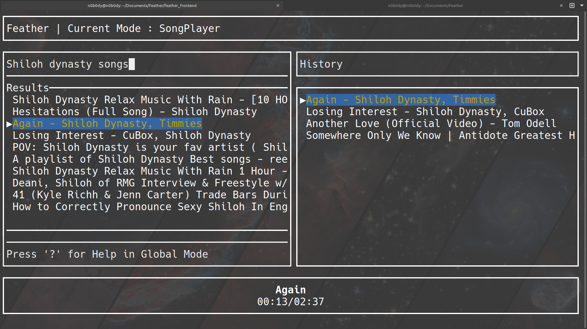

Music for the terminal.
Feather is a lightweight YouTube Music player for your command line. Search, play, and get back to what you were doing.
Get started ↓ · View the source on GitHub ↗
Free and open source · Built with Rust

Small, focused, and local
Feather streams music from YouTube Music in a simple terminal interface. It uses yt-dlp to find tracks and mpv for playback.
- Search and stream songs without downloading them.
- Keep your listening history close at hand.
- Use a lightweight, keyboard-driven terminal interface.
Build from source
Install Rust, yt-dlp, and mpv first, then build Feather:
git clone https://github.com/13unk0wn/Feather.git
cd Feather/feather_frontend
cargo build --release
./target/release/feather_frontendLinux is currently the only officially supported platform.
Still early in development. See the project on GitHub for updates, issues, and the latest source.